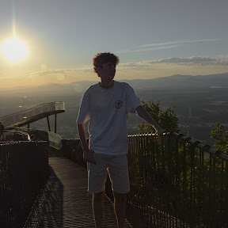

Mi nombre es Sergio Sans Duarte, nací el 7 de marzo del 2007 en el hospital de Son Espaces. Actualmente, tengo 17 años y soy hijo segundo de una familia de 4, donde está mi madre, mi padre y mi hermano mayor de 20 años. A los tres años comence a ir a la guarderia al colegio CEIP Blanquerna, donde me quedaria hasta sexto de primaria. He de decir que mis notas hasta esas fechas eran de sobresaliente, a diferencia de ahora, que lucho por conseguir el aprovado. Durante la primaria, sobre segundo o tercero, me apunté a baloncesto en el Pla de na Tesa. Este deporte me ha acompañado por gran parte de mi vida, aproximadamente unos 8 años. Una vez terminada la primaria, comencé la secundaria , donde empecé a conocer gente de la cual la mayoria no hablo a dia de hoy. Por suerte, encontré lo que es mi grupo de amigos hasta hoy en 4rto de la ESO. A pesar del gran cambio, conseguí sacar una media de 7 en la secundaria, y como no tenia nada claro que queria hacer con mi vida, decidí ir a Bachillerato. Por cierto, justo ese año fue el año en el que dejé el baloncesto por un conjunto de sucesos, como por ejemplo que la mayoria del equipo el cual habia jugado por años se iba, y encima empezaba el bachiller, así que lo dejé. Definitivamente el salto que hubo en bachiller fue gigantesco, y me quedé con una media de 6 al final del primer curso, llevandome Física y Química de pendiente. Lamentablemente no aprové el examen de verano, de hecho, nadie lo aprobó, así que aun estoy en proceso de aprovarla. Por último, destacaria que en lo que llevo de bachiller he decidido que haré un FP de informática, ya que es sin duda lo que mas me llama del instituto, y a pesar de que no se exactamente lo que haré en el futuro, por lo menos tengo un camino al que aferrarme.
Como ya lo dije antes, nací en el hospital de Son Espaces, pero ahora vivo y siempre he vivido en Ses Cases Noves, Marratxí. Durante toda mi vida me ha agradado este sitio, ya que es un sitio tranquilo y tengo muchas cosas a mi alcance en minutos, como mercados, trasporte público y algunas casas de mis amigos. A pesar de que el colegio más cercano que tengo es el de Ses Cases Noves, mis padres decidieron apuntarme al CEIP Blanquerna, ya que era mas fiable que ese otro, ya que mis padres no habían escuchado muy buenas opiniones sobre ese colegio.
margen